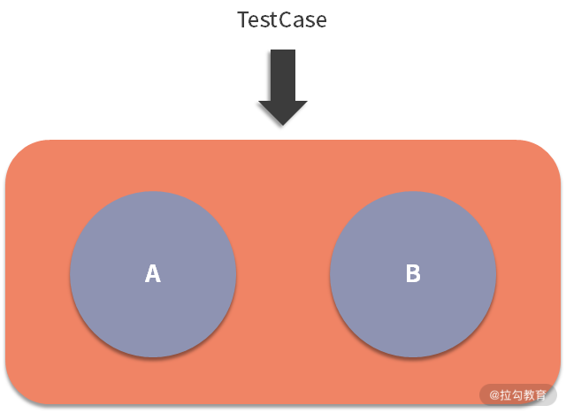

- 00 开篇词 既往不恋，当下不杂，未来不迎.md.html
- 01 微服务架构有哪些特点？.md.html
- 02 微服务架构下的质量挑战.md.html
- 03 微服务架构下的测试策略.md.html
- 04 单元测试：怎样提升最小可测试单元的质量？.md.html
- 05 集成测试：如何进行微服务的集成测试？.md.html
- 06 组件测试：如何保证单服务的质量？.md.html
- 07 契约测试：如何进行消费者驱动的契约测试？.md.html
- 08 端到端测试：站在用户视角验证整个系统.md.html
- 09 微服务架构下的质量保障体系全景概览.md.html
- 10 流程规范篇：高速迭代的研发过程需要怎样的规范？.md.html
- 11 测试技术篇：测试技术这么多，我该如何选型？.md.html
- 12 测试技术篇：如何提升测试效率？.md.html
- 13 测试技术篇：专项测试技术解决了哪些专项问题？.md.html
- 14 CICD 篇：如何更好地利用多个“测试”环境？.md.html
- 15 CICD 篇：如何构建持续交付工具链？.md.html
- 16 度量与运营篇：如何做好质量和效率的度量与运营？.md.html
- 17 度量与运营篇：如何度量与运营效率和价值？.md.html
- 18 组织保障篇：质量是设计出来的.md.html
- 19 软件测试新趋势探讨.md.html
- 20 结束语 QA 如何打造自身的核心竞争力？.md.html
- 捐赠
04 单元测试：怎样提升最小可测试单元的质量？
上一篇文章，我讲到了微服务架构下的测试策略和质量保障体系，今天我来讲讲测试策略中的最底层测试——单元测试。
单元测试的价值
单元测试是一种白盒测试技术，通常由开发人员在编码阶段完成，目的是验证软件代码中的每个单元（方法或类等）是否符合预期，即尽早在尽量小的范围内暴露问题。
我们都知道，问题发现得越早，修复的代价越小。毫无疑问，在开发阶段进行正确的单元测试可以极大地节省时间和金钱。如果跳过单元测试，会导致在后续更高级别的测试阶段产生更高的缺陷修复成本。

如图，假如有一个只包含两个单元 A 和 B 的程序，且只执行端到端测试，如果在测试过程中发现了缺陷，则可能有如下多种原因：
- 该缺陷由单元 A 中的缺陷引起；
- 该缺陷由单元 B 中的缺陷引起；
- 该缺陷由单元 A 和单元 B 中的缺陷共同引起；
- 该缺陷由单元 A 和单元 B 之间接口的缺陷引起；
- 该缺陷是测试方法或测试用例的错误导致的。
由此可见，忽略单元测试会导致后续发现缺陷时，要花费较高的成本来确认缺陷原因。
单元测试除了能够在较早阶段识别软件中的错误，它还有如下价值。
- 反馈速度快：单元测试通常以自动化形式运行，执行速度非常快，可以快速反馈结果，跟持续集成结合起来，形成有效的反馈环。
- 重构的有力保障：系统需要大规模重构时，单测可以确保对已有逻辑的兼容，如果单元测试都通过，基本上可以保证重构没有破坏原来代码逻辑的正确性。
- 使更熟悉代码：写单元测试的过程本身就是一个审视代码的过程，可以发现一些设计上的问题（代码设计的不可测试）、代码编写方面的问题（边界条件的处理不当）等。
既然单元测试由开发人员来设计和执行，那作为测试人员是不是就不需要学习这门技术了？不知道你是怎样看待这个想法的，我的观点是：
- 单元测试只是通常情况下由开发人员完成，并不是绝对的，在一些公司或项目里也存在测试人员完成的情况；
- 在你负责的模块或服务里，第一级别的测试不是你来完成的，那么你更有必要去了解它的设计思路和执行情况，这能帮助你发现单元测试可能存在的问题点，也有利于你设计和执行后续高级别的测试类型；
- 开发人员总是不太擅长做测试类的工作，当你掌握了单元测试的技能，你便更有机会去帮助和影响到开发人员，赢得他对你的尊重，也有利于你们更好地合作；
- 这种想法是测试人员的常见想法，所以掌握单元测试技能在测试人员群体中也会是稀缺技能，因此，掌握它将会获得额外的锻炼机会和个人影响力，要知道，机会总是留给有准备的人。
微服务下的单元测试类型
就像之前课程所说：微服务中最大的复杂性不在于服务本身，而在于微服务之间的交互方式，服务与服务之间常常互相调用以实现更多更复杂的功能。
举个例子，我们需要测试的是订单类（Order）中的获取总价方法（getTotalPrice()），而在该方法中除了自有的一些代码逻辑外，通常需要去调用其他类的方法。比如这里调用的是用户类（User）的优惠等级方法（reductionLevel ()）和商品类（Goods）中的商品价格方法（getUnitPrice()）。很显然，优惠等级方法或商品价格方法，只要一方有错误，就会导致订单类获取总价方法的测试失败。基于这种情况，可以有两种单元测试类型。
1. 社交型单元测试（Sociable Unit Testing）

如图，测试订单类的获取总价方法（Order.getTotalPrice()）时会真实调用用户类的优惠等级方法（User.reductionLevel()）和商品类的商品单价方法（Goods.getUnitPrice()）。将被测试单元视为黑盒子，直接对其进行测试，这种单元测试称之为社交型单元测试（Sociable Unit Testing）。
2. 孤立型单元测试（Solitary Unit Testing）

如图，如果测试订单类的获取总价方法（Order.getTotalPrice()）时，使用测试替身 （test doubles） 技术来替代用户类的优惠等级方法（User.reductionLevel()）和商品类的商品单价方法（Goods.getUnitPrice()）的效果。对象及其依赖项之间的交互和协作被测试替身代替，这种单元测试称之为孤立型单元测试（Solitary Unit Testing）。
另外，上述提到的测试替身是一种在测试中使用对象代替实际对象的技术，常用的技术如下。
- 桩代码（Stubs）：当在对象上调用特定方法时，会对其进行硬编码（临时代码）的方式来代替真实代码提供固定响应。比如，某函数 X 的实现中调用了一个函数 Y，而 Y 不能调用，为了对函数 X 进行测试，就需要模拟一个函数 Y，那么函数 Y 的实现就是所谓的桩代码。
- 模拟代码（Mocks）：模拟代码跟桩代码类似，它除了代替真实代码的能力之外，更强调是否使用了特定的参数调用了特定方法，因此，这种对象成为我们测试结果的基础。
根据被测单元是否与其交互者隔离，会产生以上两种单元测试类型，这两种类型的单元测试在微服务测试中都起着重要作用，它们用来解决不同的测试问题。

由上图可知，在微服务架构中，不同组成使用的单元测试类型不同：

特别注意：当微服务的（网关+仓库+资源+服务层）与（域逻辑）之比相对较大时，单元测试可能收益不大。常见的情况有小型服务或某些几乎只包含了网关+仓库+资源+服务层等内容的服务，例如适配服务等。
如何开展单元测试？
在实际项目过程当中，应该怎样开展单元测试呢？通常来说，可以通过如下四个步骤来进行。
1. 确定使用单元测试的代码范围
虽然单元测试很重要，但并不是所有代码都需要进行单元测试，可以重点关注核心模块代码或底层代码，如重要的业务逻辑代码或通用组件类等。
2. 确定技术选型（以 Java 语言为例）
单元测试中的技术框架通常包括单元测试框架、Mock 代码框架、断言等。
- 单元测试框架：和开发语言直接相关，最常用的单元测试框架是 Junit 和 TestNG，总体来说，Junit 比较轻量级，它天生是做单测的，而 TestNG 则提供了更丰富的测试功能，测试人员对它并不陌生，这里不多做介绍。
- Mock 代码框架：常见的有 EasyMock、Mockito、Jmockit、Powermock 等。
- 断言：Junit 和 TestNG 自身都支持断言，除此还有专门用于断言的 Hamcrest 和 assertJ。
关于它们的优劣网络上已有非常多的文章，这里不再赘述。综合来看，个人比较推荐使用Junit+Mockito+assertJ，我建议你根据自己的需求选型。
3. 引入衡量单测覆盖情况的代码覆盖率工具
只单纯地看单元测试的执行通过率还比较单一，为了更全面地看到测试的覆盖情况，可以借助代码覆盖率工具和技术。在 Java 语言里，常用覆盖率工具有 Jacoco、Emma 和 Cobertura，个人推荐使用 Jacoco。
4. 接入持续集成工具
接入持续集成工具是为了形成工具链，将单元测试、代码覆盖率统计集成在一起，使得代码有提交时便自动触发单元测试用例的执行，并伴随有代码覆盖率的统计，最后可以看到单元测试报告的数据（用例通过情况和代码层面各个维度的覆盖数据）。接着可以判断是否需要修改代码，这便形成了一个代码质量的反馈环，如下图所示。

后续的文章还会讲解到代码覆盖率工具和持续集成工具。
单元测试最佳实践
了解了如何开展单元测试，那么如何做到最好呢？我们都知道，代码产生错误无非是对一个业务逻辑或代码逻辑没有实现、实现不充分、实现错误或过分实现，所以无论是拆解业务逻辑还是拆解逻辑控制时都要做到 MECE 原则（全称 Mutually Exclusive Collectively Exhaustive，中文意思是“相互独立，完全穷尽”，即日常沟通中常说的“不重不漏”）。
“不重不漏”说起来容易做起来难，为了努力做到它，写出好的单元测试，可以遵循如下具体的实践规范。
- 好的单元测试要符合 AIR 特点：Automatic（自动化）、Independent（独立性）、Repeatable（可重复）。为了凑够一个单词 AIR 的效果，所以有了如上顺序，但我觉得从实际的落地顺序上看，应该是 A->R->I。优先保障单元测试能够自动化执行，释放手工介入，再使单元测试可以重复执行，这样可以使得简单的用例先高效地执行起来，再逐渐追求用例的相互独立性。
- 常见的规范或标准做法有（以 Java 为例）
- 代码目录规范：单元测试代码必须放在“src/test/java”目录下，Maven 采用“约定优于配置”的原则，并对工程的目录布局做了约定——测试代码存放 src/test/java 目录，单元测试相关的配置资源文件存放 src/test/resources 目录。源码构建时会跳过此目录，而单元测试框架默认是扫描此目录。
- 测试类命名规范：同一个工程里测试类只用一种命名风格，推荐采用[类名]Test.java 或 Test[类名].java 的风格，比如源类名为 AccountServiceImpl.java，那么测试类名为 AccountServiceImplTest.java 或者 TestAccountServiceImpl.java。
- 测试方法命名规范：同一个工程里测试方法只用一种命名风格，推荐采用 test[源方法名]_[后缀]的风格。比如源方法名为 login()，则测试方法可以命名为 testLogin_XxxSuccess()、testLogin_XxxNotExist()、testLogin_XxxFail()。
- 测试数据要求：尽量使用生产环境的测试数据以保障有效性和多样性。
- 颗粒度要求：要保证测试粒度足够小，有助于精确定位问题。单测粒度一般是方法级别，最好不要超过类级别。只有测试粒度小才能在出错时尽快定位到出错位置，一个待测试方法建议关联一个测试方法，如果待测试方法逻辑复杂分支较多，建议拆分为多个测试方法。
- 验证结果必须要符合预期：简单来说就是单元测试必须执行通过，执行失败时要及时查明原因并修正问题。
- 代码要遵守 BCDE 原则，以保证被测试模块的交付质量。
- B：Border，边界值测试，包括循环边界、特殊取值、特殊时间点、数据顺序等。
- C：Correct，正确的输入，并得到预期的结果。
- D：Design，与设计文档相结合，来编写单元测试。
- E：Error，强制错误信息输入（如：非法数据、异常流程、非业务允许输入等），并得到预期的结果。
- 实践风格：需加注释、遵守命名规范、公共方法抽象等保证可读性。编写测试代码时，有两种实践风格（至少要有相应的注释来区分）。
- 准备-执行-断言（Arrange-Act-Assert）：先准备用于测试的对象，然后触发执行，最后对输出和行为进行断言。
- 给定-当-那么（Given-When-Then）：给定某个上下文，当发生某些事情，那么期望某些结果。
- 执行速度要尽量快：单个 CASE 的运行时间推荐不超过 5 秒 ，这样才能在持续集成中尽快暴露问题。
- 必须能自动验证：单测要能报错，不能只有调用，不准使用 System.out 等来进行人工验证，必须使用 Assert 来验证。
- 必须要有逻辑验证能力和强度：不允许使用恒真断言（如：Assert. assertTrue (true) ; ）不允许使用弱测试断言（如测试方法返回数据，只验证其中某个单字段值就当作通过）。
- 必须有很强的针对性：可以有多个 Assert 断言，但每个测试方法只测试一种情况（如一个方法涉及 3 种异常需要去覆盖测试，就写三个不同的测试方法）。
- 必须独立稳定，可重复执行：单元测试通常会被放到持续集成中，如果单测对外部环境(发布环境、网络、服务、中间件等)有依赖，容易导致持续集成机制的不可用。对于测试需要的任何条件，都应该让它们成为测试自身的一个自动化组成部分。
- 同一个工程里只用一种代码框架；同一个工程里在能够满足需求的情况下只用一种单测框架、只用一种 Mock 框架、只用一种内存数据库等。
- 单元测试遵守基本质量卡点要求：增量及全量卡点必须有，但覆盖率具体卡点要求可以根据业务差异化、分阶段地要求，如起步推广阶段，提升覆盖率阶段，最终覆盖率目标。但一般来说，行覆盖率大于等于 60%（经验值），分支覆盖率大于等于 80%（经验值），所有单测通过率 100%。核心业务、核心应用、核心模块的增量代码确保单元测试增量覆盖率达到要求，并且全量单测 CASE 通过。
上述规范和实践经验比较多，可能会因为落地难度和成本而使开发人员望而却步，事实上可以采取“小步快跑”的方式，逐次提升不同方面的要求，拉长落地的战线。
总结
本节课内容讲解了单元测试的定义：它是一种软件测试方法，目的是验证软件代码中的每个单元（方法或类等）是否符合预期，即尽早在尽量小的范围内暴露错误。
接着讲解了微服务架构下常见的交互场景，测试方式和对象的不同会出现社交型单元测试和孤立型单元测试两种单元测试类型。
然后讲解了实际如何开展单元测试，先确定要测试的代码范围，再引入单测框架、mock 框架、断言类型、代码覆盖率工具和持续集成工具，使代码提交过程形成一个有效的单元测试质量反馈环。紧接着我又给出了一系列的最佳实践或规范，包括类和方法的命名规范、目录规范、数据要求、验证结果要求、运行速度、质量卡点等，相信这些内容可以帮助你更好地设计和实现单元测试。
你所负责的项目或服务，是否运行过单元测试呢？如果有，欢迎在留言区评论，说说单元测试的落地情况是怎样的。同时欢迎你能把这篇文章分享给你的同学、朋友和同事，大家一起交流。
相关链接 https://www.martinfowler.com/articles/microservice-testing/#testing-unit-introduction 单元测试框架 TestNG官网： https://testng.org/doc/ TestNG教程： https://www.yiibai.com/testng/ Junit官网： https://junit.org/junit5/ Mock代码框架 Mockito： https://site.mockito.org/ jMock： http://jmock.org/ Easymock： http://www.easymock.org/ Powermock： https://github.com/powermock/powermock Mock框架对比： https://stackoverflow.com/questions/22697/whats-the-best-mock-framework-for-java 断言 Hamcrest： http://hamcrest.org/JavaHamcrest/ assertJ： https://joel-costigliola.github.io/assertj/assertj-core.html 覆盖率工具 Jacoco： https://www.jacoco.org/jacoco/trunk/index.html Emma： http://emma.sourceforge.net/ Cobertura： https://cobertura.github.io/cobertura/
© 2019 - 2023 Liangliang Lee. Powered by gin and hexo-theme-book.